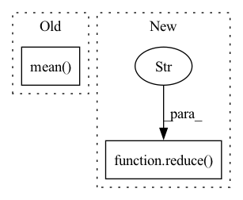

Pattern ID :28082
Before Change
"pitch_nll": -result["pitch_log_probs"].mean(),
"time_nll": -result["time_log_probs"].mean(),
"velocity_nll": -result["velocity_log_probs"].mean(),
"end_nll": -result["end_log_probs"].mean()
}
def train(self):
TODO: train docstringAfter Change
"instrument_nll": -reduce("instrument_log_probs"),
"pitch_nll": -reduce("pitch_log_probs"),
"time_nll": -reduce("time_log_probs"),
"velocity_nll": -reduce("velocity_log_probs" ) ,
"end_nll": -reduce("end_log_probs"),
}
In pattern: SUPERPATTERN
Frequency: 3
Non-data size: 2
Instances Fragment ID: 83021810
Project Name: intelligent-instruments-lab/iil-python-tools
Commit Name: 78c2ab9e98adc304bebc8cff2541364d27d91dab
Time: 2022-04-15
Author: victor.shepardson@gmail.com
File Name: notepredictor/scripts/train_notes.py
M Class Name: Trainer
N Class Name: Trainer
M Method Name: get_loss_components(3)
N Method Name: get_loss_components(2)
M Parent Class:
N Parent Class:
M File Name: notepredictor/scripts/train_notes.py
N File Name: notepredictor/scripts/train_notes.py
M Start Line: 144
M End Line: 150
N Start Line: 141
N End Line: 150
Before Change
model_out = self.denoise_fn(x, log_snr)
losses = self.loss_fn(model_out, noise, reduction = "none")
losses = losses.mean(dim = tuple(range(1, losses.ndim)))
if self.p2_loss_weight_gamma >= 0:
// following eq 8. in https://arxiv.org/abs/2204.00227
loss_weight = (self.p2_loss_weight_k + log_snr.exp()) ** -self.p2_loss_weight_gammaAfter Change
model_out = self.denoise_fn(x, log_snr)
losses = self.loss_fn(model_out, noise, reduction = "none")
losses = reduce( losses, "b ... -> b" , "mean")
if self.p2_loss_weight_gamma >= 0:
// following eq 8. in https://arxiv.org/abs/2204.00227
loss_weight = (self.p2_loss_weight_k + log_snr.exp()) ** -self.p2_loss_weight_gamma Fragment ID: 83021826
Project Name: lucidrains/denoising-diffusion-pytorch
Commit Name: f900f40f14a7f24b8ef2145b2d2af221b46b4ecc
Time: 2022-06-09
Author: lucidrains@gmail.com
File Name: denoising_diffusion_pytorch/continuous_time_gaussian_diffusion.py
M Class Name: ContinuousTimeGaussianDiffusion
N Class Name: ContinuousTimeGaussianDiffusion
M Method Name: p_losses(4)
N Method Name: p_losses(4)
M Parent Class: nn.Module
N Parent Class: nn.Module
M File Name: denoising_diffusion_pytorch/continuous_time_gaussian_diffusion.py
N File Name: denoising_diffusion_pytorch/continuous_time_gaussian_diffusion.py
M Start Line: 270
M End Line: 271
N Start Line: 270
N End Line: 271
Before Change
x = self.temporal_transformer(x)
x = x.mean(dim = 1) if self.pool == "mean" else x[:, 0]
x = self.to_latent(x)
return self.mlp_head(x)After Change
// excise out temporal cls token or average pool
x = x[:, 0] if not self.global_average_pool else reduce( x, "b f d -> b d" , "mean")
x = self.to_latent(x)
return self.mlp_head(x)
Fragment ID: 83021806
Project Name: lucidrains/vit-pytorch
Commit Name: 6ec8fdaa6dc114b3789b80635a64b126756c02c8
Time: 2022-10-24
Author: lucidrains@gmail.com
File Name: vit_pytorch/vivit.py
M Class Name: ViT
N Class Name: ViT
M Method Name: forward(2)
N Method Name: forward(2)
M Parent Class: nn.Module
N Parent Class: nn.Module
M File Name: vit_pytorch/vivit.py
N File Name: vit_pytorch/vivit.py
M Start Line: 139
M End Line: 166
N Start Line: 144
N End Line: 180